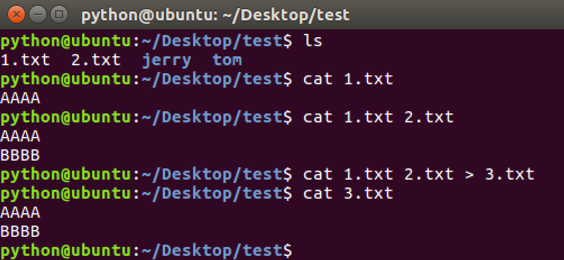
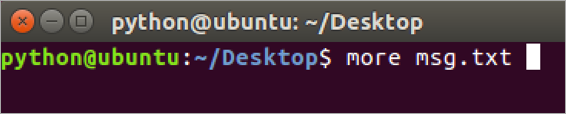

查看文件内容命令
学习目标
- 能够说出查看大文件分屏显示使用的命令
1. 查看文件内容命令的使用
| 命令 | 说明 |
|---|---|
| cat | 查看小型文件 |
| more | 分屏查看大型文件 |
cat命令的效果图

说明:
- cat命令结合重定向可以完成多个文件的合并
- gedit 文件编辑命令，可以查看和编辑文件
more命令的效果图
当查看内容信息过长无法在一屏上显示时，可以使用 more 命令在终端分配显示文件内容。

操作键说明:
| 操作键 | 说明 |
|---|---|
| 空格 | 显示下一屏信息 |
| 回车 | 显示下一行信息 |
| b | 显示上一屏信息 |
| f | 显示下一屏信息 |
| q | 退出 |
2. 管道(|)命令的使用
管道(|)：一个命令的输出可以通过管道做为另一个命令的输入，可以理解成是一个容器，存放在终端显示的内容。
管道命令的效果图:

说明:
管道(|)一般结合 more 命令使用，主要是分配查看终端显示内容。
3. 小结
- 查看小文件使用 cat 命令
- 分屏查看大型文件使用 more 命令，
- 查看终端显示内容并分屏展示，使用 管道(|) 结合 more 命令。